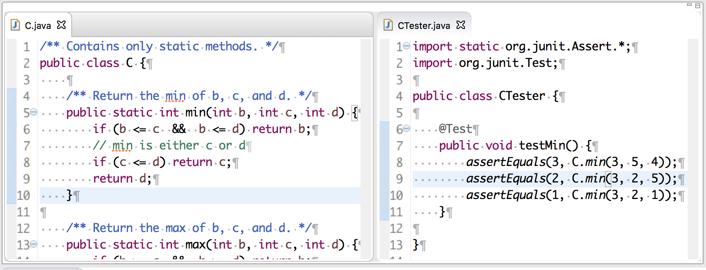

assertEquals
The image below shows class C and JUnit testing class CTester, which appear in the same default package. Static function C.min returns the minimum of three values. Procedure testMin in CTester tests whether function C.min is correct by calling procedure assertEquals three times.

Procedure assertEquals has two parameters, the expected-value and the computed-value, so a call looks like this:
assertEquals(expected-value, computed-value);
Note the order of parameters: expected-value and computed-value. Therefore, do not write the first call this way: assertEquals(C.min(3, 5, 4), 3);
Actually, there are many methods assertEquals, one has int parameters, one has char parameters, one has float parameters, etc. The name assertEquals is overloaded.
assertEquals(e, c); is executed as follows. If the values of e and c are equal, nothing is done. If e and c are different, an "exception" is thrown, thus causing a failure, so that a red line appears in the resulting JUnit testing pane. That's all there is to it.
Look at the above example when you have to write a JUnit testing procedure to test a static function. Make sure you put in enough test cases (i.e. calls on assertEquals) so that each part of the static function is exercised in at least one test case.